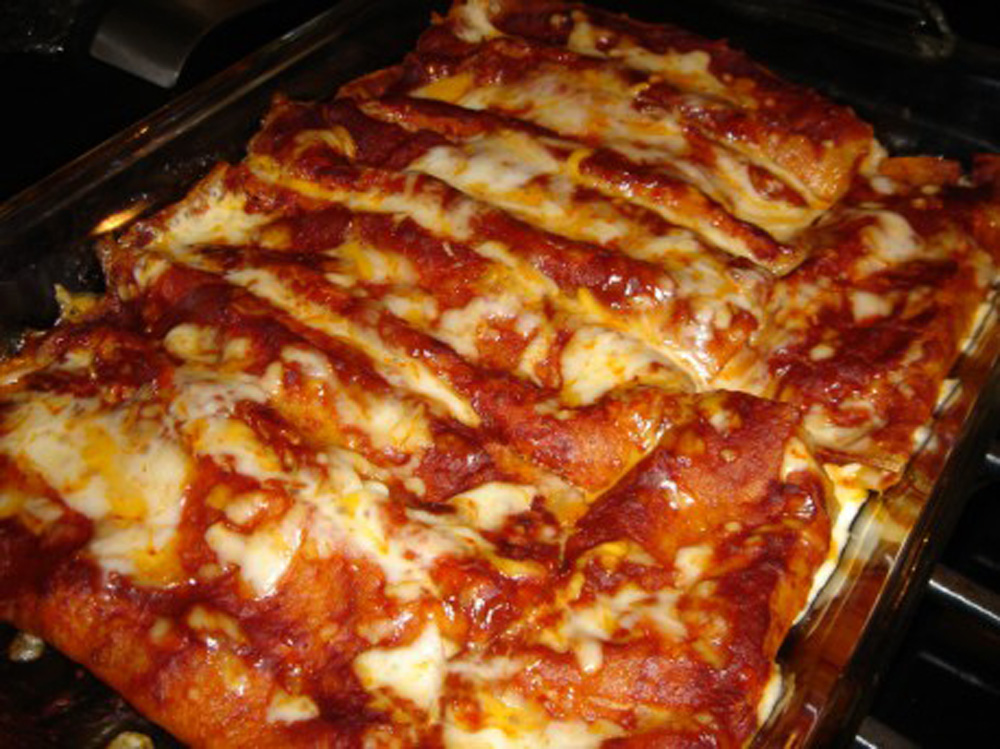

Easiest Beef Enchiladas

Ingredients
- 1 lb. ground beef
- 1 16 oz jar salsa
- 2 cups shredded cheddar and Montery Jack cheese (8 oz pkg)
- 12 flour tortillas
Directions
Preheat oven to 350*F.
Brown ground beef, drain. Stir in 1/2 cup salsa and 1 cup cheese. Spread 1 cup
salsa in bottom of each 13x9 in. baking dish. Place 1/4 cup meat mixture on each tortilla,
roll up and place in pan seam side down. Top with remaining salsa and cheese.
Bake at 350*F for 20 min.
Makes 12 enchiladas.
Enjoy!
Recipie From: CCYSA 1st Stake 2nd Ward Relief Society